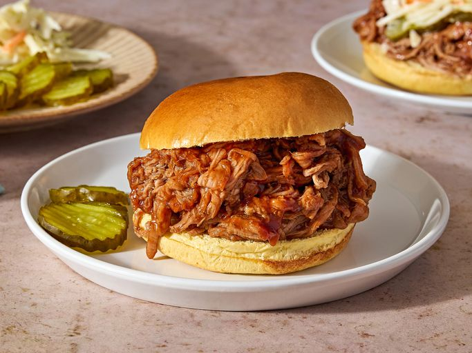

Back to Home
Slow Cooker Pulled Pork
This is a simple recipe for slow cooker pulled pork. This easy slow cooker pulled pork recipe uses pork tenderloin and root beer to make the most tender shredded pork. Mixed with your favorite BBQ sauce, it is sure to bring rave reviews!

Ingredients
- 2 lbs pork tenderloin
- 1 can (12 oz) root beer
- 1 cup BBQ sauce
- 1 onion, sliced
- 2 cloves garlic, minced
- Salt and pepper to taste
Instructions
- Season the pork tenderloin with salt and pepper.
- Place the sliced onion and minced garlic in the bottom of the slow cooker.
- Place the seasoned pork tenderloin on top of the onions and garlic.
- Pour the root beer over the pork.
- Cover and cook on low for 6-8 hours or until the pork is tender and easily shredded with a fork.
- Remove the pork from the slow cooker and shred it using two forks.
- Return the shredded pork to the slow cooker and mix it with the BBQ sauce.
- Serve the pulled pork on buns or as desired.
Nutrition Information
Per serving: approximately 300 calories, 20g protein, 15g fat, 20g carbohydrates